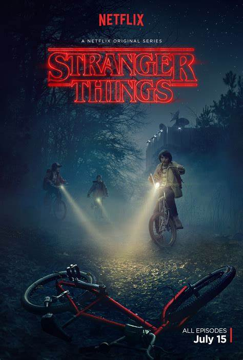

MOVIE GALLERY

STRANGER THINGS
Stranger Things is set in the fictional rural town of Hawkins, Indiana, during the 1980s.Set in the 1980s, primarily in the fictional town of Hawkins
Release Date:15 july 2016
Director:Matt Duffer,Justin Doble
Cast:millie bobby brown
Language:English
Rating IMDB: 8.7/10

BREAKING BAD
A chemistry teacher diagnosed with inoperable lung cancer turns to manufacturing and selling methamphetamine with a former student in order to secure his family's future.
Release Date:2008-2013
DirectorL:George Vincent Gilligan Jr.
Cast:Aaron Paul,Bryan cranston
Language:English
Rating IMDB: 9.7/10

END OF THE FU**ING WORLD
A budding teen psychopath and a rebel hungry for adventure embark on a star-crossed road trip in this darkly comic series based on a graphic novel
Release Date:24 oct 2017
Director:Jonathan Entwistle
cast:Jessica Barden,Alex lawther
Language:English
Rating IMDB: 8.1/10

NEVER HAVE I EVER
The complicated life of a modern-day first generation Indian American teenage girl, inspired by Mindy Kaling's own childhood. The series received generally favorable reviews.
Release Date:2020-2023
Director:Kabir Akhtar
cast:Maitrey Ramakrishnan,Darren Barnet
Language:English
Rating IMDB: 7.9/10

MONEY HEIST
Money Heist is a Spanish heist crime drama television series created by Álex Pina. The series traces two long-prepared heists led by the Professor, one on the Royal Mint of Spain, and one on the Bank …
Rlease Date:2017-2021
Director:Director Alex Rodrigo
cast:Ursula corbero,Alvaro Morte
Language:Spanish,English
Rating IMDB: 8.2/10